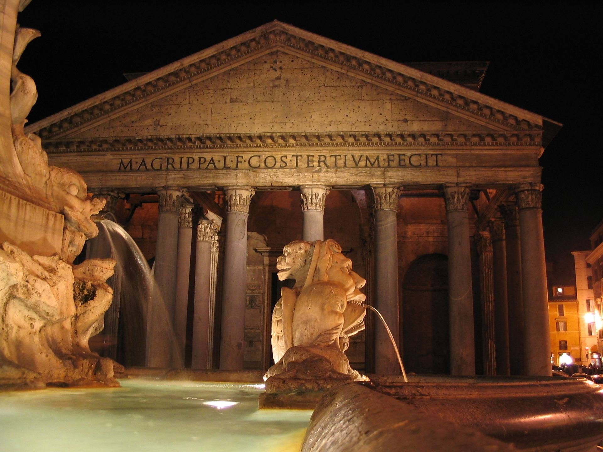

Pantheon

Our little trip is headed into downtown. The Pantheon is one of the best-preserved monuments of ancient Rome. The structure, completed around 126-128 A.D. during the reign of Emperor Hadrian, features a rotunda with a massive domed ceiling that was the largest of its kind when it was built. The Pantheon is situated on the site of an earlier structure of the same name, built around 25 B.C. by statesman Marcus Agrippa, and is thought to have been designed as a temple for Roman gods.
Read more...
Source: History.com